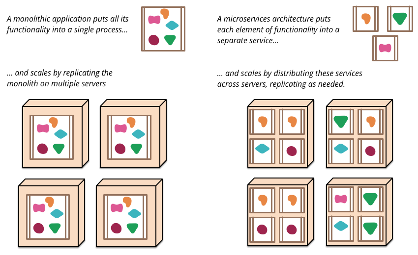

Jenkins
Build great things at any scale

Author: David Montaño
Agenda
- Description
- Freestyle Jobs
- Plugins
Description
Jenkins
Jenkins is an open source continuous integration tool written in Java. The project was forked from Hudson after a dispute with Oracle.
Jenkins
- It is a server-based system running in a servlet container such as Apache Tomcat.
- It supports SCM tools including AccuRev, CVS, Subversion, Git, Mercurial, Perforce, Clearcase and RTC
- Can execute Apache Ant and Apache Maven based projects as well as arbitrary shell scripts and Windows batch commands.
- The primary developer of Jenkins is Kohsuke Kawaguchi.
Jenkins
Builds can be started by various means:
- triggered by commit in a version control system
- scheduling via a cron-like mechanism
- building when other builds have completed
- requesting a specific build URL
Continuous Integration
- Merging development work with a Master/Trunk/Mainline branch constantly so that you can test changes, and test that changes work with other changes.
- Test your code as often as possible to catch issues early.
- Automated tests: unit test framework.
- Build server performing these tests while developers can continue working.
Continuous Delivery
- Continual delivery of code to an environment.
- Deliver code to a user base, whether it be QA or customers for continual review and inspection.
- Small batches of work continually fed to the next step will be consumed more easily and find more issues early on.
- Easier for the developer because issues are presented to the developer before the task has left their memory.
Continuous Deployment
- Deployment or release of code to Production as soon as it is ready.
- Any testing is done prior to merging to the Mainline branch and is performed on Production-like environments.
- The Production branch is always stable and ready to be deployed by an automated process.
- The automated process is key because it should be able to be performed by anyone in a matter of minutes (preferably by the press of a button).
- Logs and Metrics
- Continuous Integration + Continuous Delivery
Microservices
Other Continuous Delivery Tools
- GoCD
- Team City
- Circle CI
Freestyle Jobs
Freestyle Jobs

Freestyle Jobs
Freestyle Jobs
Freestyle Jobs
Plugins
Install using the Interface
Install using the Interface
Install using the Interface
Install by Hand
- Download a Plugin
- Save the downloaded *.hpi/*.jpi file into the $JENKINS_HOME/plugins directory. You will then need to restart Jenkins (many containers let you do this without restarting the container)
- Caveat: the names of the plugin directories on the download site are not always matching the name given to the plugin; common sense should apply.